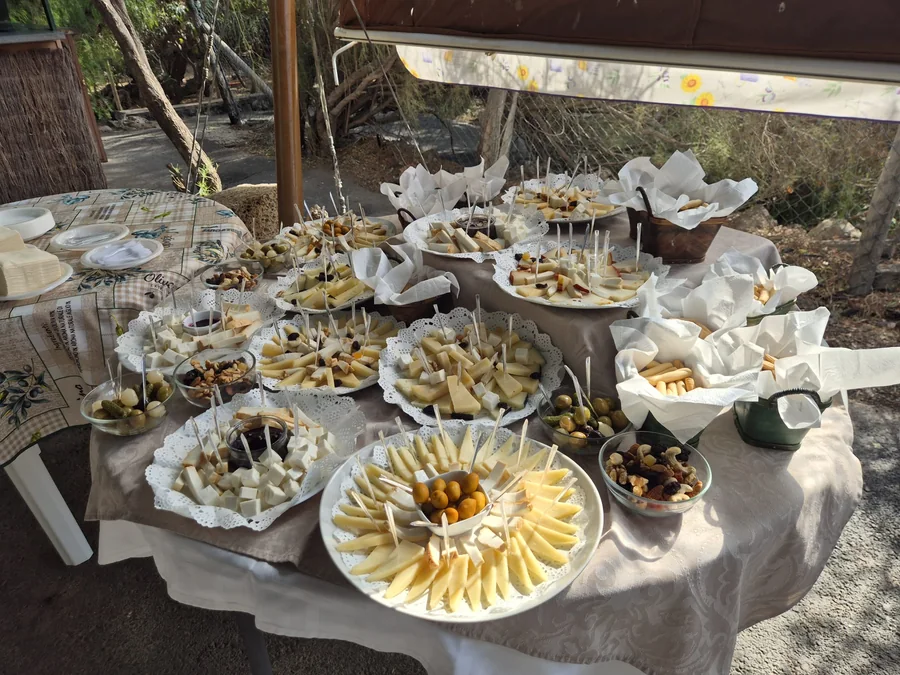

Habana Express es La Carreta cuando sale de Arafo. La cocina es la misma; lo que cambia es que la mesa la pones tú.
Lo primero, tres datos
Para dar un precio hace falta poco: qué se celebra, dónde y cuántos sois. Con eso sabemos si el sitio tiene cocina, cuánto hay que llevar montado de casa y de qué tamaño es el buffet.
Lo que llevamos
Nuestra especialidad es el buffet: fuentes al centro, raciones de las de aquí y gente repitiendo. Si la celebración pide otra cosa, también montamos mesas de quesos y aperitivos, que funcionan mejor cuando se come de pie.
Según el evento podemos llevar también el equipamiento y el personal. No va de serie: se detalla en el presupuesto, para que se vea qué se está pagando.
Las bebidas van aparte. Lo decimos antes y no después, que es cuando molesta.
Con cuánto tiempo avisar
Cuanto antes mejor, y más en temporada de comidas de empresa. Cuéntanoslo desde la página del catering o por teléfono, al 922 51 50 66.